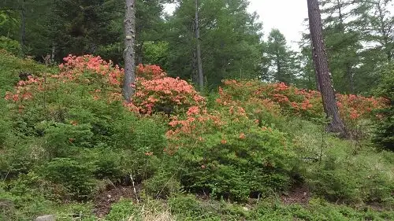
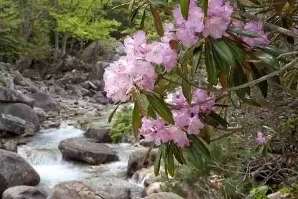
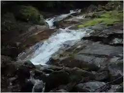
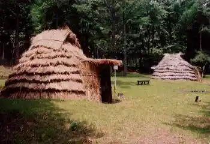
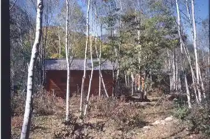

Japan / Nagano / Kawakamimura
Kawakamimura, Nagano
Kawakamimura · Nagano
Kawakamimura
Highlighted on the Nagano map.

Sights
Kegi Taira no Rengetsutsuji
Kawakamimura, Nagano · 0267-97-2121 · Official / source link
Mawari Me Taira no Shakunage
Kawakamimura, Nagano · 0267-97-2121 · Official / source link

(Shinshu no Meisui Hi Mizu) Chikumagawa Genryu
Kawakamimura, Nagano · 0267-97-2121 · Official / source link

Ofuka Yama Iseki
Kawakamimura, Nagano · 0267-97-2600 · Official / source link

Kinpo Fureai Forest
Kawakamimura, Nagano · 0267-97-2070 · Official / source link

Kawakamimura Bunka Center
Kawakamimura, Nagano · 0267-97-2000 · Official / source link
Mitake Koya
Kawakamimura, Nagano · 0267-99-2030 · Official / source link
Kawakamimura Tourism Association
Kawakamimura, Nagano · 0267-97-2121 · Official / source link
Fureai no Mori Campground
Kawakamimura, Nagano · 0267-99-2428 · Official / source link
Go Hikari Bokujo Oto Campground
Kawakamimura, Nagano · 0267-98-2468 · Official / source link